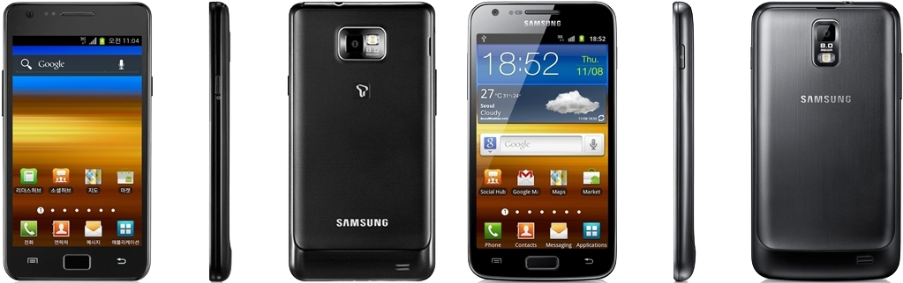

삼성 갤럭시 S2
1. 외관

삼성전자가 2011년 4월과 9월 출시한 안드로이드 스마트폰.
2. 사양
| 프로세서 | 삼성 엑시노스 4210 SoC. ARM Cortex-A9 MP2 1.2 GHz CPU, ARM Mali-400 MP4 266 MHz GPU | ||
| 메모리 | 1 GB LPDDR2 SDRAM, 16 / 32 GB 내장 메모리, micro SDXC 및 exFAT (최대 64 GB 지원) | ||
| 디스플레이 |
4.27인치 WVGA(480 x 800) RGB 서브픽셀 방식의 SMD→삼성D Super AMOLED Plus 멀티터치 지원 정전식 터치 스크린 |
||
| 네트워크 | 기본 | HSPA+ 21Mbps, HSDPA & HSUPA & UMTS, NFC |
GSM & EDGE Wi-Fi 802.11a/b/g/n, 블루투스 3.0/APT-X Codec |
| CM | TD-SCDMA | ||
| 카메라 | 전면 200만 화소, 후면 800만 화소 AF 및 LED 플래시 | ||
| 배터리 | Li-lon 1650 mAh | ||
| 운영체제 | 안드로이드 2.3 (Gingerbread) → 4.0 (Icecream Sandwich) → 4.1 (Jelly Bean) | ||
| 규격 | 66.1 x 125.3 x 8.89 mm, 121 g | ||
3. 상세
2011년 2월 14일 MWC 2011에서 공개되었다.
강력한 성능으로 유명세를 떨쳤던 갤럭시 S의 정식 후속작이라는 점에서 엄청난 기대를 모았고 이는 옵티머스 2X나 아트릭스가 적지 않은 실망을 줬던 탓도 있을 것이다
갤럭시 S II는 당연히 그 기대를 저버리지 않는 스펙으로 공개되었다.